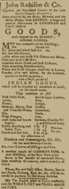

by
Stefan Bielinski
John Robison was born about 1745. By the mid-1770s, he was in Albany County and seeking a permit from the Schenectady committee of safety to trade in the west.
Within a few years, he had settled in Albany. In 1778, he purchased the property at the northwestern corner of State and Market Street from former sheriff Harmanus Schuyler. From that time, the large store at that location was known as "Robison's Corner." In 1781, he was among a number of Albany newcomers who purchased the "freedom" or right to do business within the city of Albany.
By 1782, he had married Geertruy or Caty Van Patten. Over the next decade, six of their children were baptized in Albany and Schenectady churches. Robison was a member and trustee of the First Presbyterian church.
By the end of the war, his yellow corner store opposite the Dutch church was an Albany landmark. Robison advertized a range of European and more exotic imported goods in the Albany Gazette and other papers and that he accepted cash, notes, produce, and wood in payment. In 1800, his main property was served by seven slaves. He owned several lots along Lion Street and also a storehouse and part of the dock along the waterfront. At one time, he was in partnerhip with newcomer Daniel Hale. Beginning in 1803, he served as a director of the Bank of Albany and the New York State Bank.
John Robison died in August 1827 and was buried from his residence at 34 Dean Street. He had lived eighty-eight years! His will left the estate to his son, Hugh, and several grandchildren. It was recorded in October.

notes
 Sources: The life of John Robison is CAP biography
number 422. This profile is derived chiefly from family
and community-based resources. We seek information
on his origins and early life.
Sources: The life of John Robison is CAP biography
number 422. This profile is derived chiefly from family
and community-based resources. We seek information
on his origins and early life.
In April 1776, he was among a number of Scottish newcomers who petitioned the Schenectady committee to be able to "go up the Country." Robison's application was granted noting that "they have not signed the General association, but in other respcts have appeared to be true friends to the American Cause." CC, 2:1064.
Robison's advertisement from the short-lived Albany Journal, for December 22, 1788. It lists a range of products imported from London and elsewhere and commodities taken in return. Note the reference to rum supplied from "their Distilery."
first posted: 10/30/02; last revised 6/25/04